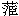

| 1. | 史／編年／明實錄／英宗／卷九十九 正統七年十二月／7日(P.1988) |
| ○癸巳山東登州衛軍曲秉善於將軍教塲中取土得金葉二十二塊以進 上命如例給
賞
○察剌禿山 衛頭目阿松加哈兒分 衛女直頭目女廝忽 渚冬河衛女直頭目愷郎加  愷郎加:抱本郎作即。 愷郎加:抱本郎作即。臨洮府安積寺剌麻領占巴河州 衛白塔寺剌麻鎖南藏卜等景雲寺剌麻綽吉汪速等來朝 貢馬及方物賜綵幣等物有差 |
|
| 2. | 史／編年／明實錄／憲宗／卷二百二十二 成化十七年十二月／21日(P.3828) |
| ○辛酉海西 渚冬河渚冬河:廣本冬作東。等 衛野人女直都指揮松吉答 等罕東左衛都指揮只克遣千戶阿黑納等各來朝貢馬駝□及貂皮賜宴并金織衣綵叚等物有差 壬戌秦懷王妃張氏薨妃陝西都指揮麟之女宣德丙午冊立為王妃至是薨訃聞賜祭葬如制
○賜番僧萬行清修真如自在廣善普慧 廣善普慧:廣本慧作惠。弘度妙應掌教翊國正覺大濟法王西天圓智大慈悲佛領占竹等十四人誥命 ○密雲城門銃被盜去廵關御史李經劾奏鎮守左監丞許常都指揮同知王榮鈐束不嚴請究其罪命宥之
． ． ． ． ． ． ． ． ． ． ． ． ． ． ． ． ． ．
|
|
| 3. | 史／編年／明實錄／憲宗／卷二百三十四 成化十八年十一月／30日(P.3988) |
| ○甲子泰寧等衛都督脫脫孛羅遣指揮拱吉剌歹等海西右城衛野人女直都指揮撒失哈等渚冬河衛野人女直都指揮哈的納等弗提衛右都督荅吉祿遣都指揮管禿等各來朝貢馬賜宴并衣服綵叚等物有差
○甘肅總兵官署都督同知王璽奏罕東衛番賊擁眾殺掠阿思都簇并入境內河清
堡等處都指揮梅琛率軍往禦之斬首六級奪獲番漢男婦五十餘人牛馬等畜四千五百有餘此虜久服招徠輒肆猖獗乞調兵撫捕事下兵部議以為問罪之師未可輕舉 上曰罕東諸夷比甞聽調恊取哈密未有擕貳之心今小肆侵掠若遽加兵似失柔遠之義宜遣人往諭俾改過自新如果負固不服亦止宜頓兵境上使之畏威聽撫為便
． ． ． ． ． ． ． ． ． ． ． ． ． ． ． ． ． ．
|
|
| 4. | 史／編年／明實錄／孝宗／卷九十四 弘治七年十一月／26日(P.1734) |
| ○辛亥以岐王將之國命兵部右侍郎李介工部右侍郎謝綬同往通州整理車船夫役
○海西失里等 衛女直都指揮察哈奴等兀者等 衛女直都指揮阿都赤等 渚冬河等 衛女直都指揮松吉答等嘔罕河等 衛女直都督 都督:抱本作都指揮。尚古等各來朝 貢方物賜宴并衣服綵叚等物有差 ○福建建寧府夜有流星自東南至西北有聲如雷
． ． ． ． ． ． ． ． ． ． ． ． ． ． ． ． ． ．
|
|
| 5. | 史／編年／明實錄／孝宗／卷一百三十一 弘治十年十一月／13日(P.2319) |
| ○庚戌降工部主事盛應期為雲南安寧驛驛丞范璋為呂合驛 呂合驛:閣本呂合作合呂。驛丞應期管濟寧等閘璋管 衞河船隻頗能舉法南京進 貢內官弗獲滿意奏其阻滯薦新品物械至京下獄擬贖杖還職時降調之 ○廵按直隸監察御史韓普奉例考察請黜老疾不謹等官楊州府同知潘賢等三十八員吏部覆奏且請留內歷任未及二年鳳陽府推官傅景良 傅景良:閣本無良字。等五員辦事從之 ○禮部奏冬至節例賜百官宴 上命免宴賜以節錢鈔
○
海西渚冬河等衞女直都指揮歹察等來貢賜宴并綵叚衣服等物如例
． ． ． ． ． ． ． ． ． ． ． ． ． ． ． ． ． ．
|
|
| 6. | 史／編年／明實錄／孝宗／卷二百二十四 弘治十八年五月／5日(P.4240) |
| ○己丑 上不視朝
○端午節免宴
○海西渚冬河等衛女直都指揮歹察等各來貢賜宴并綵段衣服等物有差
○虜入獨石等處寇掠下廵按御史勘問奏上請逮問守備都指揮馬經分守左參將楊英左少監唐祿等罪命姑宥之俱令載罪殺賊 載罪殺賊:三本載作戴，是也。○實授試監察御史趙秉倫王濟王潤甯杲陳文試沙鵬高良弼許讚郭東山林奇 林奇:三本奇作琦，下同。韓廉張彧 張彧:三本彧作或，下同。潘鏜 潘鏜:抱本鏜作堂，下同。熊卓周倫李廷光姜佐馬昊吳漳李璞邵清為監察御史秉倫濟潤雲南道杲文試浙江道鵬良弼湖廣道讚東山陜西道奇廉彧廣東道鏜卓四川道倫廷光山東道佐昊廣西道漳璞江西道清山西道 ○先是太常寺奏鋪戶關領物價中有洪武等錢市不通行負累未便 上令戶
部查究其故戶部言本朝原鑄洪武等通寶民間久未行用而貯於官庫者甚多今宜因公用關支時盡發內帑所積俾之流布庶錢法自通得旨既官庫貯多須設法行用其議處所以禁私鑄濫用之宜并查弘治通寶己未鑄數目以聞戶部言禁私鑄發官帑罪阻壞之法前已具陳請更申明處置惟是各處所鑄弘治通寶今所鑄者纔十之一二 上曰洪武等錢行用宜申禁約敢有阻當及私鑄并知情買使者必罪之弘治通寶鑄造已久何為止有此数工部仍再看詳并查費過工料之數聞奏
○戶部議覆整理大同等處軍餉都御史閻仲宇 閻仲宇:抱本宇作宗，誤。所言籌邊事宜一催征常賦謂山西河南等處當輸大同宣府二鎮民糧屯糧往往積逋數多以督徵無統紀也今宜令大同及山西行都司所屬者責成於冀北道守廵官宣府所屬者 所屬者:閣本脫者以上十四字。責成於口北 道分廵僉事過期不完者守廵等官罰府州縣官俸廵撫及管糧郎中罰守廵 罰守巡:抱本巡下有等官二字。及都司管屯官俸河南等處亦如此例行一減省浪費謂舊各邊 謂舊各邊:抱本閣本舊下有例字，是也。按㐲人馬始支與草料今在城聽征者亦累月支給矣舊例大同軍糧月折放銀六錢今通折銀八錢矣王府祿糧並取給于有司今往往借支軍餉矣各城馬匹當無事時軍自採草今乃有兌支借支之費矣又官軍當支糧草時糧則不復挨次草則亂取狼籍費出又不經矣宜一切禁革以復其舊一慎擇監臨謂大同宣府改設通判監收糧草然皆僦屋以居使人無樂於從事之心又各城守備官因典守追陪之禁不嚴致有浥爛草束之弊亦請宜令廵撫等官量給官錢建立府舘以居之且嚴黜陟幽明之法其草束虧折者仍追陪如數從之 |
|
| 7. | 史／編年／明實錄／武宗／卷一百七十一 正德十四年二月／17日(P.3297) |
| ○辛巳海西渚冬河衛女直都指揮僉事松吉答等冒其父祖故名來貢及兀者左衛指揮同知也克赤原賜勑字磨滅不可辯通事譯奏其故命禮兵二部集議請移文遼東鎮廵官省諭各夷父祖已故及衰老不任朝貢者許其具奏襲替從之
○宣德末年兵部議以天下衛所軍不補
伍奏遣御史清理必俟三年更代以覈實効其後或因地方災傷用兵不實 用兵不實:廣本抱本實作時，是也。則暫停至是尚書王瓊言今四方荐罹凶荒其無災者苦於繁賦乞召各清軍御史回京今後再不必遣惟浙江山東山西河南四處軍多仍留清理亦做廵按例一年更代報可時御史以清軍三年為苦差瓊欲結要人心 結要人心:舊校改結要作要結。故為奏減其更制亂法類如此 ○命都指揮閻勳 閻勳:抱本閻作關，疑誤。充左參將分守寧夏西路地方 |
|
| 8. | 史／編年／明實錄／世宗／卷一百三十二 嘉靖十年十一月／24日(P.3138) |
| ○甲戌 命瀋府遙懿安王 瀋府遙懿安王:三本東本府下有平字，是也。孫輔國將軍勛渰管 理平遙王府事
○初 上以西苑田畝農具耕種收獲之事有未成法 有未成法:三本東本有未作未有，是也。令禮部戶部會議以聞至是禮部尚書夏言戶部尚書許讚等條具以進言西苑耕熟地五頃七十畝有奇歲用農夫五十人管農老人四人騾夫八人人日支口粮三升太倉関給 太倉關給:東本給作支。仍復其身耕畜十六頭御馬塩倉 御馬鹽倉:廣本閣本東本鹽作監，是也。給以草料其農具俱出之內官監五穀種 五穀種:三本東本種下有子字，是也。順天府送用倉廒農舍牛房工部盖造每歲戶部侍郎一人郎中一人提督之所獲納之恒裕倉以備 郊廟粢盛撥太倉軍斗三十守之 三十守之:三本東本十下有人字，是也。歲終戶部奏報其出入之数 上從之仍付史館采輯 ○泰寧等 衛夷人頭目塔十歹 搭十歹:三本東本十作卜，是也。等海西 渚冬河等 衛女直夷人都指揮僉事娘你哈等各入 貢宴賚如例 |
|
| 9. | 史／編年／明實錄／世宗／卷三百八十二 嘉靖三十一年二月／28日(P.6765) |
| ○庚辰 庚辰:廣本閣本辰下有「海西益實左等衛女直都督僉事反(閣本作歹，疑是也)答力等，海西勿里河(閣本河作阿)等衛女直都指揮同知因答忽等，海西渚冬河等衛女直都指揮僉事納里河(閣本作阿)等，各來朝貢，宴賚如例」六十一字。贈故思州府知府 李允簡為貴州按察司副使給造墳費仍廕一子為國子生錄其守思州死事也 錄其守思州死事也:廣本閣本守作于，思作田。初虜虜 虜虜:三本作虜，是也。之由威虜犯懷仁也坐營官王恭既敗死関南震動總督蘇祐言虜騎且三萬兵部請行薊保二鎮戒嚴并令大將仇鸞選撥人馬防獲 防獲:三本獲作護，是也。城門 陵寢 上允其奏而心慮之令遣飛騎偵虜犯何地文諸將有能抗禦與戰者否 文諸將有能抗禦與戰者否:三本文作及，是也。廣本有下有賢字，廣本閣本無否字。因問舊時塘馬報事今如何也盖是時無以王恭死事奏者 奏者:廣本閣本作為上言者。俄大同巡撫何思以虜退聞 以虜退聞:廣本閣本聞作告。 上亟覽其疏則亦不言虜入所在且不言虜騎眾寡及出邊駐營遠近 上益疑之趣兵部疾遣人馳視至是返報言本月初五日虜以千騎犯弘賜堡初九日虜復由榆溝八掠懷仁川十三日虜二千騎復犯平虜奶河堡因備述王恭平川墩死事之烈及遊擊呂勇劉潭參將張騰孫麒焦澤副總兵王懷邦等諸抗禦不力及逗抗退縮收 及逗撓退縮收:三本收作狀，是也。廣本閣本狀下有兵部以聞四字。 上乃 切責兵部 上乃切責兵部:廣本閣本作上切責之。曰虜前後無過二千騎耳爾等乃𧧷於蘇祐言謂且三萬其偵報不言之效明矣 偵報不言之效明矣:廣本閣本言作嚴，是也。閣本效作數。輕率若此豈不有悞軍機警疑遠邇 警疑遠邇:三本警作驚，是也。耶已兵部遂分別地方諸將前後失事狀因言今邊方多事將臣觀望若不申嚴法憲恐無以革偷玩故習以作忠勇之心請從重典 上曰虜近猖獗甚 虜近猖獗甚:廣本閣本虜近作邇虜。實由將官怯懦退縮縱之侯然 縱之侯然:三本侯作使，是也。孫麒劉潭其令錦衣 衛差官校械擊來京 械擊來京:三本擊作繫，是也。問王懷邦呂勇焦澤 呂勇焦澤:閣本作焦澤呂勇。各革去職役 革去職役:廣本閣本役作級，是也。令姑冠 令姑冠:廣本作姑令冠帶，是也。戴罪自効後防秋畢日 後防秋畢日:廣本閣本後作候，是也。別行奏處仍切責總督蘇祐令其調度官軍 官軍:廣本閣本官作諸。血戰破虜不許仍前怠玩 大同自弘賜堡拒虜市後日苦侵暴虜屢傳言求開市如初無敢應者至是復遣前開市時夷使了頭智來求市且云不允則大舉入寇通事官林叢蘭者故與了頭智善乃誘入境縛之智曰殺我易耳弟恐中國自是無寧期矣于是總督侍郎蘇祐以擒獲功 問 擒獲功問:三本問作聞，是也。叢蘭時以他事充軍詔釋其罪斬了頭智于大同市梟首各鎮 |
|
| 10. | 史／編年／明實錄／神宗／卷四百十一 萬曆三十三年七月／28日(P.7705) |
| ○庚子宴海四 渚冬河等 衛渚冬河等衞:廣本抱本渚作諸，會典作渚。進貴夷人 進貴夷人:廣本抱本貴作貢，是也。兀速兒赤 兀速兒赤:抱本兀作九，疑誤。等一百十二名命泰寧侯陳良弼待 ○予工部尚書姚繼可馳驛回藉調理疏至此凡四十五上矣乃有是命
○山東登州府各州縣地震有聲 各州縣地震有聲:抱本震下有俱字。 |
|
| 11. | 史／編年／明實錄／神宗／卷四百五十五 萬曆三十七年二月／17日(P.8586) |
| ○己巳祭 朝日壇遣公張惟賢行禮 皇太子第五女生
○輔臣葉向高言頃者羣臣意見不同互相矛盾 皇上於一槩章奏無所可否以致進退去留聽其自便又雲南撫鎮逮解至京亦已多日而候命旬餘未付法司大非清朝之法紀不報
○頒給海西渚冬河等衛女直夷人金孛羅等各貢賞鈔絹
． ． ． ． ． ． ． ． ． ． ． ． ． ． ． ． ． ．
|
|
| 12. | 史／編年／明實錄／校勘記／世宗／卷三百八十二(P.1995) |
|
明世宗實錄卷三百八十二校勘記| 頁次 | 行次 | 舘本 | 校記 | | 一 | 前五 | 章錢 | 三本章作庫，是也。 | | | 五 | 秦舉主事 | 三本秦作奏，是也。 | | | 六 | 錢數 | 廣本數作粮。 | | | 六 | 裕王景王府第 | 三本裕上有造字，是也。 | | | 八 | 點齋視牲 | 閣本齋作齊。 | | | 九 | 李本行禮 | 閣本李本作嚴嵩。廣本閣本禮下有「○命兵部左侍郎聶豹都察院左副都御史王學益同左春坊左庶子兼翰林院侍讀郭朴清理軍職貼黃」四十字。 | | | 九 | 虜大入改 | 三本改作攻，是也。 | | | 十 | 孫麒軍 | 廣本閣本軍下有「於洞兒溝，遊擊呂勇劉潭帥兵赴之，望麒軍」十七字，是也。 | | | 十一 | 勇潭 | 抱本作呂勇劉潭。 |
| | 十一 | 功二堡不不 | 三本作攻二堡不下，是也。 | | | 後三 | 王以斾 | 三本斾作旂，是也。 | | | 三 | 廕其子國子生 | 廣本其作一。廣本閣本國上有為字。 | | | 三 | 張愚 | 廣本愚作憲。 | | | 四 | 賞銀幣有差 | 廣本閣本賞上有各字，是也。 | | | 六 | 告大齊 | 抱本閣本齊作齋。 | | | 七 | 牧報日夕至 | 三本牧作警，是也。 | | | 七 | 移營遠徏 | 舊校改徏作徙。 | | | 八 | 狄來 | 三本狄作秋，是也。 | | | 八 | 犯臨敵撓觀 | 廣本閣本作凡臨敵逗撓觀望，是也。 | | | 九 | 都總督 | 廣本抱本無都字，是也。 | | 二 | 前一 | 行一献 | 廣本閣本献下有禮字，是也。 | | | 三 | 香案之東 | 廣本東作前。 | | | 三 | 稍南西向 | 廣本南作東。 | | | 四 | 稍南東向 | 廣本閣本南東作東南。 | | | 六 | 具袍服 | 廣本閣本服下有皮弁服三字，是也。 |
| | 七 | 寫 | 三本寫作舄，是也。 | | | 後二 | 贊官 | 三本贊下有冠字，是也。 | | | 五 | 持節掌冠官 | 廣本閣本持上有各字，是也。 | | | 七 | 將將至 | 廣本閣本作節將至，是也。 | | | 十 | 二王俱詣香案序前立 | 由本頁後八行出字起，至俱字止，廣本閣本脫。廣本序前作前序，是也。 | | 三 | 前一 | 侍立王左右 | 廣本閣本王上有于字。 | | | 三 | 各賓陞自東階 | 廣本閣本賓下有贊字。 | | | 十一 | 祀訖 | 三本祀作祝，是也。 | | | 後一 | 禮部服坐 | 三本作禮部官啟復坐，是也。 | | | 二 | 揭盖服 | 廣本閣本服作袱，是也。 | | | 五 | 復位 | 廣本閣本位下有「各贊者俱跪，正冕訖，興，復位」十一字，是也。 | | | 十一 | 載芳載芳 | 抱本閣本作載芬載芳，是也。 | | 四 | 前一 | 二王各案舉爵飲訖 | 三本無案字，是也。廣本無爵字。 | | | 四 | 陞詣拜位 | 廣本陞作由東階。閣本陞上有由東階三字。 |
| | 九 | 具禮善冠服 | 廣本閣本禮作翼，是也。 | | | 十一 | 竭祭 | 三本竭作謁，是也。 | | | 後三 | 奉天門 | 廣本閣本門下有前字。 | | | 五 | 吉倉宋鎬 | 廣本閣本吉倉作承襲土舍，是也。 | | | 七 | 惟罷一視之儀文 | 廣本閣本視下有事。 | | | 九 | 種蔓末除 | 三本末作未，是也。 | | | 十 | 人心咨一 | 三本咨作各，是也。 | | | 十一 | 禁屠五日 | 廣本閣本日下有「○命署都指揮僉事五軍大營坐營張麒充神樞營練營參將，神機營佐擊將軍蕭漢充五軍營練勇參將，原任固原遊擊將軍李光啟充神樞營佐擊將軍，原任大同西路右參將周邦充神機營坐營官」七十七字。 | | | 十二 | 大用 | 三本用作同，是也。 | | | 十二 | 師眾禦于平川墩 | 三本師作帥，是也。 | | 五 | 前一 | 參將張騰 | 廣本閣本參上有時字，是也。 |
| | 一 | 閉壘不去 | 三本去作出，是也。 | | | 四 | 奇法 | 閣本法作沄。 | | | 四 | 地震有聲 | 廣本閣本聲下有「以神機營練勇參將施寬神樞營佐擊將軍黃恩為五軍營參將」廿五字。 | | | 五 | 以虜患為慮 | 廣本閣本無此五字。 | | | 五 | 有河運謀 | 三本河作何，是也。 | | | 七 | 毆陽安 | 舊校改毆作歐。 | | | 八 | 餘洪 | 三本餘作徐，是也。 | | | 九 | 時領陳延綏四千 | 廣本抱本領陳作陳領，是也。 | | | 十 | 張後 | 三本後作俊，是也。 | | | 十二 | 言宣大額兵 | 廣本閣本言作而，是也。 | | | 後一 | 運籌著 | 廣本著作策，是也。 | | | 二 | 絕殄凶類 | 廣本閣本類下有以報陛下四字。 | | | 三 | 則大將事也 | 廣本閣本也下有「惟密賜天語叮寧嚴飭」九字。 |
| | 七 | 丁巳 | 舊校改巳作卯。 | | | 九 | 欺玄謗上 | 廣本閣本上下有「○海西卜款等衛女直都指揮僉事(閣本事下有猛魯禿等海西兀魯罕河等衛女直都指揮僉事十九字)光(閣本作老)乞等各來朝貢馬，宴賚如例」二十五字。 | | | 十 | 昨歲 | 昨字起，至下頁前一行乃字止，閣本作內管興工。廣本脫此數十字。 | | | 十二 | 遵照 | 抱本照作詔，是也。 | | 六 | 前一 | 毆陽必進 | 抱本毆作歐，是也。 | | | 七 | 二萬四十 | 三本四十作四千。 | | | 八 | 八十 | 三本十作千，是也。 | | | 九 | 推拽火車 | 廣本火作大，是也。 | | | 後二 | 計奏 | 三本計作訐，是也。 | | | 四 | 貰不問 | 廣本閣本問下有「○敕靈丘王聰滆曾長孫廷址代理府事，以靈丘王老疾，從其請 |
| | | | 也」二十五字。 | | | 八 | 事尤易集 | 廣本閣本集下有「部議亦以為便」六字。 | | | 十 | 每折銀六錢 | 三本每下有石字，是也。 | | | 十 | 及本省各項事例銀 | 廣本閣本省下有「生員吏農承差陰醫」八字，是也。各作等。 | | 七 | 前四 | 遇於所加 | 三本遇作過，是也。 | | | 四 | 反折色 | 三本反作及，是也。 | | | 五 | 功支 | 廣本閣本支作次，是也。 | | | 八 | 及二三輩者軍 | 三本軍作革，是也。 | | | 十 | 己卯 | 廣本閣本卯下有「錄嚮水堡三山堡石澇池三處獲功死事官軍鄧淮等十四人，高秀等三十三人，王越等三十五人，各陞賞如例」四十三字。 | | | 十二 | 不必候代 | 廣本閣本代下有從都察院奏也六字。 | | | 十二 | 庚辰 | 廣本閣本辰下有「海西益實左等衛女直都督僉事反(閣本作歹，疑是也)答力等， |
| | | | 海西勿里河(閣本河作阿)等衛女直都指揮同知因答忽等，海西渚冬河等衛女直都指揮僉事納里河(閣本作阿)等，各來朝貢，宴賚如例」六十一字。 | | | 後一 | 錄其守思州死事也 | 廣本閣本守作于，思作田。 | | | 二 | 虜虜 | 三本作虜，是也。 | | | 四 | 防獲 | 三本獲作護，是也。 | | | 五 | 文諸將有能抗禦與戰者否 | 三本文作及，是也。廣本有下有賢字，廣本閣本無否字。 | | | 六 | 奏者 | 廣本閣本作為上言者。 | | | 七 | 以虜退聞 | 廣本閣本聞作告。 | | | 十二 | 及逗撓退縮收 | 三本收作狀，是也。廣本閣本狀下有兵部以聞四字。 | | | 十二 | 上乃切責兵部 | 廣本閣本作上切責之。 | | 八 | 前二 | 偵報不言之效明矣 | 廣本閣本言作嚴，是也。閣本效作數。 | | | 二 | 警疑遠邇 | 三本警作驚，是也。 |
| | 五 | 虜近猖獗甚 | 廣本閣本虜近作邇虜。 | | | 五 | 縱之侯然 | 三本侯作使，是也。 | | | 六 | 械擊來京 | 三本擊作繫，是也。 | | | 六 | 呂勇焦澤 | 閣本作焦澤呂勇。 | | | 七 | 革去職役 | 廣本閣本役作級，是也。 | | | 七 | 令姑冠 | 廣本作姑令冠帶，是也。 | | | 七 | 後防秋畢日 | 廣本閣本後作候，是也。 | | | 八 | 官軍 | 廣本閣本官作諸。 | | | 十二 | 擒獲功問 | 三本問作聞，是也。 | | | 後四 | 攻屠堡塞 | 廣本閣本塞作寨，是也。 | | | 四 | 乃始出邊 | 閣本邊作境。 | | | 五 | 二萬有餘 | 廣本閣本二上有亦字。 | | | 六 | 同心奮勇方氣盈欲饜 | 廣本閣本勇下有血戰虜三字，是也。 | | | 八 | 熒蕩蹂 | 廣本抱本熒作焚，三本蹂下有躪字，是也。 | | | 九 | 劉澤 | 廣本閣本澤作潭，是也。 |
| | 十 | 降罰逮門 | 三本門作問，是也。 | | | 十 | 尚騰 | 廣本閣本尚作張，是也。 | | | 十二 | 曹雄等 | 廣本閣本等下有一十三人四字，是也。 | | | 十二 | 擁兵俻寇 | 三本俻作避，是也。 | | 九 | 前一 | 錦衣 | 廣本閣本衣下有衛字，是也。 |
． ． ． ． ． ． ． ． ． ． ． ． ． ． ． ． ． ．
|
|
| 13. | 史／編年／明實錄／校勘記／神宗／卷四百十一(P.1846) |
|
明神宗實錄卷四百十一校勘記| 頁次 | 行次 | 館本 | 校記 | | 一 | 前二 | 時享太廟 | 廣本無時字，抱本時上有以字。 | | | 二 | 命英國公張惟賢代 | 廣本抱本命作遣，賢下有恭字。 | | | 三 | 祭司門之神 | 廣本抱本門作庙。 | | | 六 | 南道御史 | 廣本道作京。 | | | 八 | 水患 | 廣本抱本患作災。 | | | 九 | 及移各省之粟通糴 | 廣本抱本糴作糶。 | | | 十 | 糴買 | 廣本抱本糴作糶。 | | | 十 | 仰奉德意 | 廣本抱本仰作節。 | | | 十二 | 致生疸黃 | 廣本抱本疸作疽。 | | | 後二 | 漳滏沙滋等河 | 廣本抱本滏作隆。 | | | 四 | 軍民洶惧 | 廣本洶作均。 | | | 七 | 乞休 | 乞字起，至本卷第二頁前六行邇者二字止，廣本抱本脫。 |
| 二 | 前七 | 奏辯 | 廣本抱本辯作辨。 | | | 九 | 蔡京于宋 | 廣本于作亡。 | | | 十 | 忌才賢 | 抱本才賢作賢才。 | | | 後七 | 王士楨 | 廣本抱本楨作禎，下同。 | | | 九 | 于灞 | 廣本抱本灞作霸。 | | 三 | 前六 | 暫駕成舟而往 | 廣本成作東，抱本作束。 | | | 六 | 信不可爽 | 廣本抱本信作言。 | | | 九 | 歷言其不可 | 廣本歷作力，是也。 | | | 九 | 當在欽命未定之先 | 廣本抱本定作遣。 | | | 十二 | 永永遵守 | 廣本抱本永永作永為。 | | | 十二 | 蔣弘憲 | 廣本弘作鳴，抱本作鳩，疑誤。 | | | 後三 | 聯輔車之臂指之勢 | 廣本抱本無臂上之字，是也。 | | | 五 | 敘功等稍居其次 | 廣本抱本等下有項字，是也。 | | 四 | 前一 | 若今因罪宗 | 廣本抱本宗下有室字。 | | | 四 | 李楷 | 廣本抱本楷作偕。 |
| | 七 | 都重二城 | 廣本抱本都作鄭。 | | | 後二 | 而始其事者 | 廣本脫而以上十九字。 | | | 七 | 今已堅意乞歸 | 廣本抱本已作又。 | | | 八 | 倘一垂念于斯 | 廣本斯下有者字。 | | 五 | 前三 | 阮安 | 廣本抱本阮作元，誤。 | | | 後十 | 進士 | 抱本進上有舉字。 | | | 十一 | 請急還 | 廣本抱本急作告，是也。 | | | 十一 | 起南司業 | 廣本抱本南下有京字。 | | 六 | 前四 | 辯宮府 | 廣本抱本辯作辨。 | | | 八 | 樹聲性恬默 | 廣本性作人，聲下有「初姓林氏，隆慶二年奏復陸姓」十二字，疑誤。 | | | 十二 | 黃河洶溜 | 廣本溜作湧。 | | | 後三 | 九年考滿御史 | 廣本抱本作九年御史考滿。 | | | 四 | 參議 | 抱本議作政。 | | | 六 | 楊文 | 廣本作蒞。 |
| | 七 | 見差之人 | 廣本抱本之作乏，是也。 | | | 十 | 趨附總憲 | 廣本抱本憲作督。 | | | 十二 | 可惡惡 | 應作可惡。 | | 七 | 前一 | 紀綱 | 抱本作綱紀。 | | | 三 | 違犯 | 廣本抱本犯作法。 | | | 五 | 如有黨救激擾的 | 廣本抱本無的字。 | | | 五 | 處治不饒 | 廣本抱本饒作貸。 | | 八 | 前三 | 不必奏報 | 館本誤。廣本奏報作來救，抱本作奏救。 | | | 三 | 姜顯謨 | 廣本抱本謨作莫，疑誤。 | | | 四 | 李繼功 | 廣本繼作藻。 | | | 五 | 楊紹先 | 廣本先作元，抱本作充。 | | | 六 | 從督撫蹇達等議也 | 廣本議作奏，抱本作請。 | | | 八 | 黜斥 | 廣本斥作陟。 | | | 後一 | 良賤 | 抱本作賤良。 | | | 一 | 蓋臺臣之述備矣 | 廣本蓋作而。抱本無蓋字。 | | | 二 | 甫僥一舉 | 廣本抱本僥作倖，是也。 |
| 九 | 前一 | 尹應元 | 廣本尹作呂，誤。 | | | 一 | 鄉官 | 廣本抱本官作宦。 | | | 十二 | 亦事勢之不得不然也 | 廣本抱本然下有者字。 | | | 後三 | 還當重治 | 廣本抱本治作處。 | | | 四 | 協恭贊理 | 廣本抱本恭作同。 | | | 七 | 大毛山 | 廣本抱本毛作元，誤。按會典薊鎮有大毛山嶺關。 | | 十 | 前十一 | 人心噏訿 | 廣本噏作翕，抱本作𧬈。作翕是也。 | | | 後一 | 顧自身名 | 廣本抱本顧自作自顧，是也。 | | | 四 | 諭卿等知之 | 廣本抱本無諭字，誤。 | | | 四 | 大學士賡 | 廣本士下有朱字。 | | | 六 | 臣以被論 | 廣本抱本以作之。 | | | 七 | 政幾 | 廣本幾作機，下同。 | | | 七 | 以後乞命次輔或三輔 | 廣本作以後命次輔。 | | | 八 | 卿前被詆誣 | 廣本抱本卿下有等字。抱本無前字。 | | 十一 | 前一 | 請急追不聽 | 廣本追作進，誤。 |
| | 二 | 虜眾八百 | 廣本八百作擁入。 | | | 四 | 李繼武 | 廣本抱本李作劉，本頁後五行仍作李。 | | | 九 | 兩城 | 廣本抱本兩作西。 | | | 後二 | 虛報塘塞 | 廣本抱本塘作搪，是也。 | | | 六 | 奉先殿行禮 | 廣本行下有祭字，是也。 | | | 十 | 政機 | 廣本抱本機作幾。 | | | 十一 | 李楠 | 廣本抱本楠作補。 | | | 十二 | 非異事也 | 廣本事作時。 | | 十二 | 前六 | 遲之旬日 | 廣本之作至。 | | | 十二 | 三錢 | 廣本抱本三作二。 | | | 後二 | 任光裕 | 抱本光作先。 | | | 六 | 南居益關外 | 廣本抱本益下有往字。 | | | 六 | 黃景峩江南 | 廣本抱本峩下有往字。 | | | 六 | 黃體仁江北 | 廣本仁下有往字。 | | | 七 | 藍汝忠 | 廣本汝作以。 | | | 七 | 為山都司掌印 | 廣本抱本山下有西字，是也。 |
| | 十一 | 規諷其上 | 抱本作規諫甚正，廣本諷作諫。 | | 十三 | 前六 | 則釀成者 | 廣本抱本則作而。 | | | 十一 | 其機權庸有不在我者 | 廣本庸作容，是也。 | | | 後六 | 誰敢為皇上多一事也 | 廣本抱本無一字。 | | | 十 | 為元輔解此嘲也 | 抱本刪此字。 | | 十四 | 前二 | 大星 | 抱本大作火。 | | | 三 | 遺火燒燬房屋 | 廣本抱本無燬字。 | | | 五 | 楊坰 | 廣本坰作烱，下同；抱本作𪻣，下同。 | | | 五 | 陶秉忠 | 廣本抱本作陶東沈。 | | | 後一 | 貴州巡按 | 廣本抱本作巡按貴州。 | | | 二 | 官軍俸糧 | 廣本軍作府。 | | | 九 | 鑄錢百四十文 | 廣本抱本錢下有一字。 | | 十五 | 前五 | 每石照例五錢 | 廣本例下有折字。 | | | 後三 | 鞏縣應解京庫綿布 | 廣本脫庫以上二十四字，綿布作棉花布疋。 | | | 五 | 許煇 | 廣本煇作勳，抱本作燻。實錄本面第三 |
| | | | 行無許煇之名，恐有脫誤。 | | | 七 | 任其遷延虧欠 | 廣本抱本虧欠作日久。 | | | 九 | 嚴加罰服 | 廣本抱本服作罪。 | | | 十 | 延捱 | 廣本抱本捱作挨。 | | | 十 | 叩關 | 廣本抱本關作闕。 | | | 十一 | 願甘罪贖 | 廣本罪贖作贖罪。 | | 十六 | 前七 | 加河南左布政使 | 抱本加上有詔字。 | | | 九 | 渚冬河等衞 | 廣本抱本渚作諸，會典作渚。 | | | 十 | 進貴夷人 | 廣本抱本貴作貢，是也。 | | | 十 | 兀速兒赤 | 抱本兀作九，疑誤。 | | | 十二 | 各州縣地震有聲 | 抱本震下有俱字。 | | | 後一 | 陳汝松 | 廣本抱本及明史功臣世表汝作如，是也。 | | | 十二 | 稍任怨勞 | 廣本稍作稱。抱本作稱任勞怨。 | | 十七 | 前一 | 希圖故轍 | 抱本故作改。 | | | 一 | 不至螫其毒遂其奸不已 | 廣本抱本至作致。 | | | 五 | 即如今歲之呂承聘者 | 廣本抱本即作抑，誤。 |
． ． ． ． ． ． ． ． ． ． ． ． ． ． ． ． ． ．
|
|